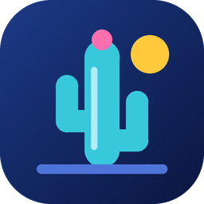
CactusPOS
Handleiding
Installeren op de kassacomputer, instellen, een keukentablet verbinden en er elke dag mee werken.
Voor CactusPOS op Windows 10 en Windows 11
Wat staat er in deze handleiding
- Wat CactusPOS is
- Wat u nodig hebt
- Installeren
- De eerste keer: maak het eigen
- Een bestelling opnemen en afrekenen
- Later betalen, rekeningen en fouten herstellen
- Het keukenscherm en het afhaalscherm
- Een tablet of telefoon verbinden
- De dag afsluiten
- Back-ups
- Bijwerken, verhuizen en verwijderen
- Als er iets misgaat
- Eén pagina voor bij de kassa
1. Wat CactusPOS is
CactusPOS is een kassa voor een foodtruck, een snackbar of een klein restaurant. U tikt aan wat de gast bestelt, rekent af, en de bestelling verschijnt op een scherm in de keuken. Aan het eind van de dag ziet u wat u hebt verkocht, hoeveel ABB daarin zit en hoeveel contant geld er in de la hoort te zitten.
Eén computer is de kassa. Dat is de laptop waarop u CactusPOS installeert. Die bewaart alle verkopen. Elk ander scherm (een tablet bij de grill, een telefoon om bestellingen op te nemen, een scherm dat gasten kunnen zien) is gewoon een webbrowser op dezelfde wifi die naar die laptop kijkt.
Het werkt zonder internet. Alles blijft op uw eigen laptop en uw eigen wifi. Er wordt niets ergens naartoe gestuurd.
2. Wat u nodig hebt
| Wat | Toelichting |
|---|---|
| Een laptop of pc met Windows | Windows 10 of Windows 11, 64-bits. Bijna elke laptop die sinds 2018 is verkocht, is dat. Ongeveer 500 MB vrije ruimte. |
| Het installatiebestand | Eén bestand met de naam CactusPOS-Setup-.exe, op een USB-stick of via een downloadlink. U hoeft vooraf niets anders te installeren: in dit bestand zit alles wat CactusPOS nodig heeft. |
| Een tablet of telefoon (als u wilt) | Voor het keukenscherm. Elke tablet of telefoon met een webbrowser werkt: iPad, Android, een oude telefoon. Die moet op dezelfde wifi zitten als de laptop. |
| Wifi (alleen voor extra schermen) | Een router in de truck, of de mobiele hotspot van de laptop zelf. Internet is niet nodig. |
| Een bonprinter (als u wilt) | Een netwerk-bonprinter (Epson, Star, Bixolon en de meeste thermische printers van 80 mm of 58 mm), of een printer die al in Windows werkt. |
3. Installeren
Dit duurt ongeveer twee minuten. U doet het één keer op de kassacomputer.
- Meld u aan bij Windows als degene die de kassa gaat gebruiken. CactusPOS wordt voor dat Windows-account geïnstalleerd.
- Dubbelklik op het bestand
CactusPOS-Setup-.exe.Windows kan eerst een waarschuwing tonen. Dat gebeurt bij programma's die nieuw zijn voor Windows. U kunt veilig doorgaan als u het bestand hebt gekregen van degene die CactusPOS voor u heeft klaargezet.
- Een blauw venster Uw pc wordt beschermd: klik op Meer informatie en daarna op Toch uitvoeren.
- Hebt u het bestand gedownload en zegt de browser dat het niet vaak wordt gedownload: wijs de download aan, klik op de drie puntjes, kies Behouden, daarna Meer weergeven en Toch behouden. De precieze woorden verschillen een beetje per browser.
- Kies uw taal (Nederlands of English) en klik op OK.
- Het welkomstvenster opent. Klik op Volgende.
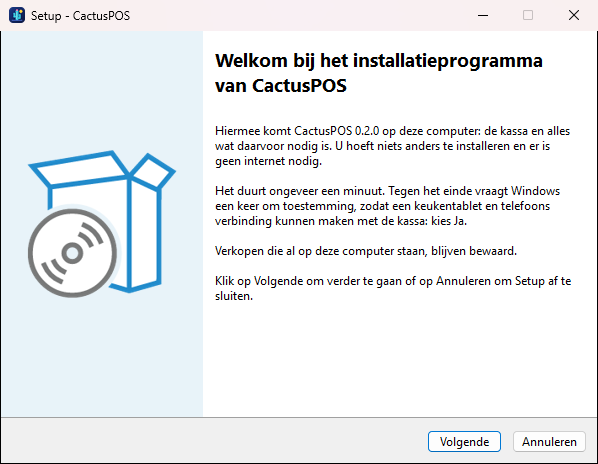
- Laat het vakje CactusPOS vanzelf starten als deze computer wordt aangezet aangevinkt en klik op Volgende. De installatie begint; dat duurt ongeveer een minuut.
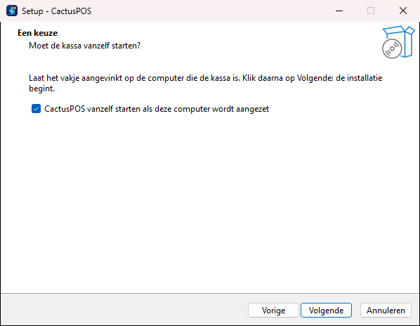
- Na een korte tijd verschijnt de melding Nog een stap. Klik op OK. Windows vraagt dan Wilt u toestaan dat deze app wijzigingen aan uw apparaat aanbrengt? Klik op Ja.
Hierdoor kunnen een keukentablet en telefoons op uw eigen wifi bij de kassa. Er wordt niets naar het internet opengezet. Klikt u op Nee, dan werkt de kassa op de laptop gewoon, maar kunnen tablets geen verbinding maken. Dat herstelt u later door het installatiebestand opnieuw te starten.
- Klik op Voltooien. De kassa opent.
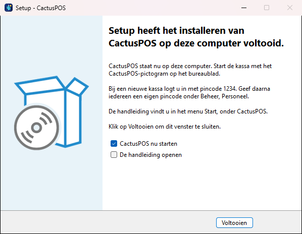
Wat er nu op uw computer staat
| Waar | Wat |
|---|---|
| Bureaublad | Het pictogram CactusPOS. Hiermee start u de kassa. |
| Menu Start, onder CactusPOS | De kassa, het keukenscherm en het afhaalscherm op deze computer; Connect a tablet or phone (een tablet of telefoon verbinden); Restore a backup (een back-up terugzetten); en deze handleiding in het Nederlands en Engels. |
| Als Windows start | De kassa opent vanzelf nadat u zich bij Windows hebt aangemeld (tenzij u het vakje hebt uitgevinkt). |
| Uw verkopen | Los van het programma bewaard, in de map AppData\Local\CactusPOS van uw Windows-account. Bijwerken of verwijderen van CactusPOS raakt ze nooit. |
4. De eerste keer: maak het eigen
Een nieuwe kassa heeft een voorbeeldmenu en twee voorbeeldpincodes. Loop deze stappen één keer door, vóór de eerste echte verkoop.
Inloggen
De kassa vraagt om een pincode. Bij een nieuwe kassa is de pincode van de eigenaar 1234. Tik de cijfers in en tik op Inloggen.
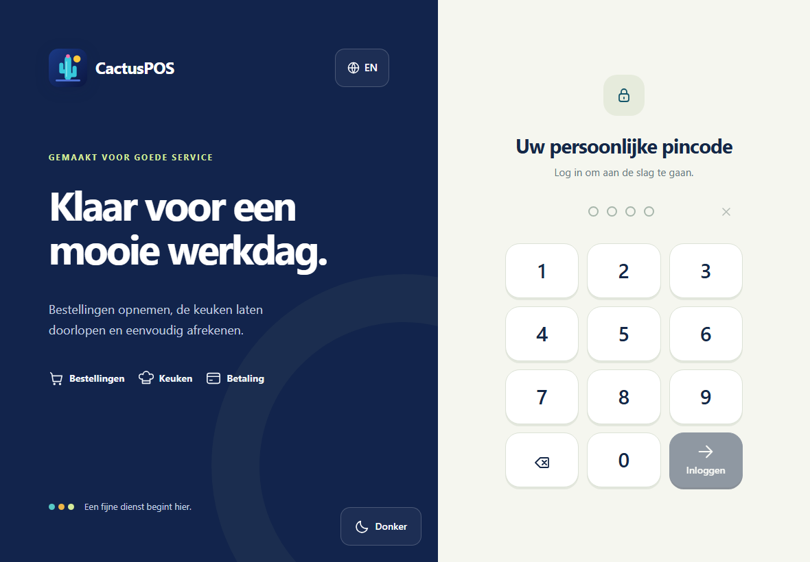
Geef iedereen een eigen pincode
De voorbeeldpincodes 1234 (eigenaar) en 1111 (medewerker) zijn op elke nieuwe CactusPOS hetzelfde. Wijzig beide voordat u echt gaat verkopen. De kassa herinnert u eraan op de pagina Beheer totdat u dat hebt gedaan.
- Tik bovenaan op Beheer en dan op Personeel.
- Tik op een persoon. Typ de echte naam en een Nieuwe pincode van 4 tot 8 cijfers. Tik op Opslaan.
- Met Persoon toevoegen voegt u iemand toe. Kies de rol: een Eigenaar kan Beheer openen en het menu, de prijzen, het personeel en de belasting wijzigen. Een Medewerker kan bestellingen opnemen en het keukenscherm gebruiken.
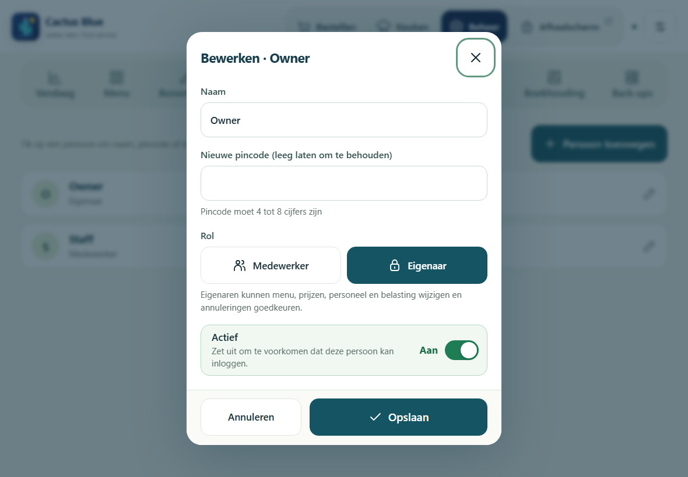
Schrijf de pincode van de eigenaar op en bewaar die op een veilige plek. Weet niemand meer een eigenaarspincode, dan moet degene die u met CactusPOS helpt die opnieuw instellen.
Uw bedrijfsgegevens
Beheer › Bedrijf. Vul de bedrijfsnaam in, het CRIB-nummer (dat staat op elke bon), adres en telefoon, en de tekst onderaan de bon. Kies de taal van de bon. Tik op Opslaan.
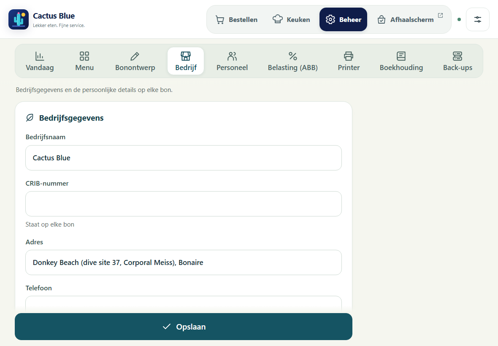
Belasting (ABB)
Beheer › Belasting (ABB). De prijzen op uw menu zijn inclusief ABB; de kassa rekent uit hoeveel ABB er in elke verkoop zit. Vraag uw boekhouder welk tarief geldt voor wat u verkoopt. Klopt een tarief, tik dan op Markeer gecontroleerd. Tot die tijd staat er Niet gecontroleerd als geheugensteun.
Uw menu
Beheer › Menu. In de rij bovenaan staan de categorieën (Burgers, Dranken). Daaronder staan de items van de categorie waarop u hebt getikt.
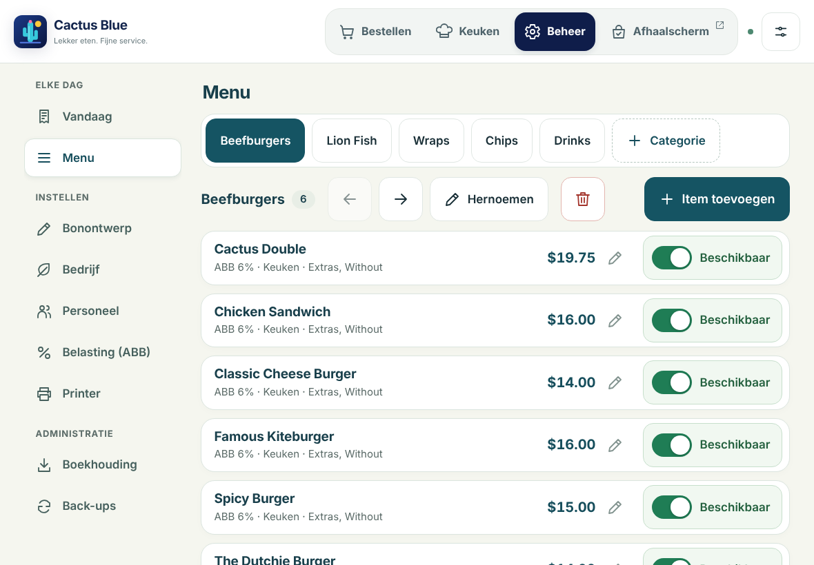
- Een item wijzigen: tik erop. U kunt de naam, de omschrijving, de prijs, de belastingcategorie en de opties wijzigen (extra's zoals kaas, of een keuze zoals welk drankje).
- Nieuw item: Item toevoegen. Nieuwe categorie: Categorie.
- Uitverkocht: zet Beschikbaar uit. Op de kassa staat er dan Uitverkocht bij het item en kunt u het niet meer aantikken. Zet het weer aan als u het weer hebt.
- Een prijs die elke dag anders is (vangst van de dag): kies bij dat item Dagprijs: invullen bij de kassa. De kassa vraagt dan elke keer om de prijs.
De bon
Beheer › Bonontwerp. Kies een stijl, voeg uw logo toe, een bedankje, of een QR-code voor uw wifi of website. Het voorbeeld rechts laat de bon zien terwijl u hem aanpast. Tik op Ontwerp publiceren om hem in gebruik te nemen.
Staat de bedrijfsnaam al in uw logo, kies dan Alleen logo onder Bovenkant van de bon, of zet Bedrijfsnaam tonen uit. Losse schakelaars bepalen logo, adres/telefoon, bovenste regel/ondertitel, bestelnummer, datum/tijd, rekeningnaam, betaalgegevens/referentie, slotregel/plaatje, eigen regels en QR-codes. Elke eigen regel en QR-code heeft ook een eigen afdrukschakelaar. Verborgen inhoud blijft bewaard en kan weer aan. Kassabon en keukenbon hebben aparte instellingen. Publiceer zodra het voorbeeld goed is; bestaande bestellingen houden hun oorspronkelijke ontwerp.
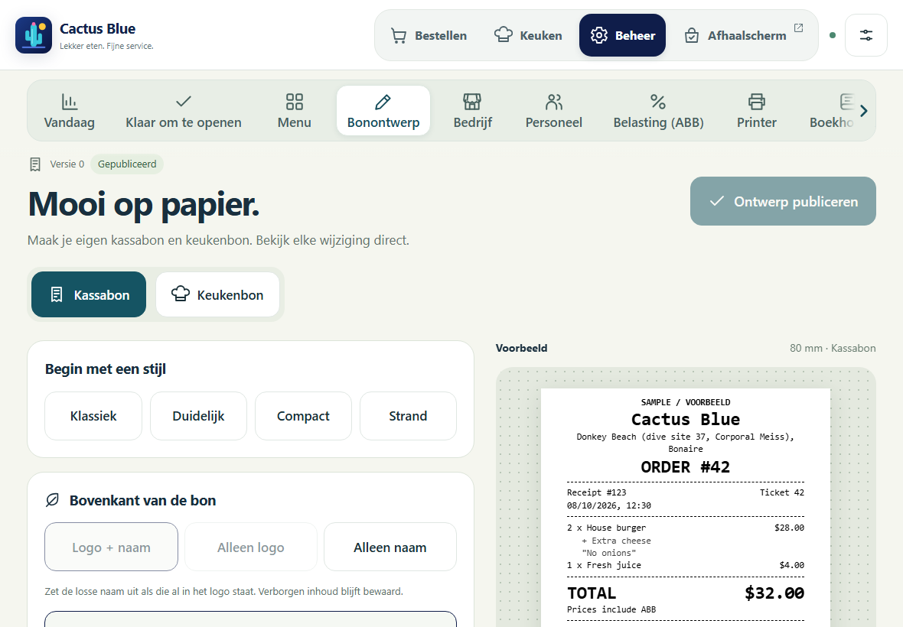
De bonprinter
Zonder bonprinter werkt de kassa ook. Tik na een betaling op Bon en Windows toont zijn afdrukvenster, met de printers die in Windows zijn geïnstalleerd.
Met een netwerk-bonprinter: Beheer › Printer. Zet Bonprinter gebruiken aan, typ het adres van de printer (een nummer zoals 192.168.1.50; de meeste printers drukken het af op hun zelftestpagina), kies de papierbreedte en tik op Opslaan en testpagina afdrukken. Vanaf dan komt er bij elke betaling vanzelf een bon uit, zolang Bon afdrukken bij betaling aanstaat.
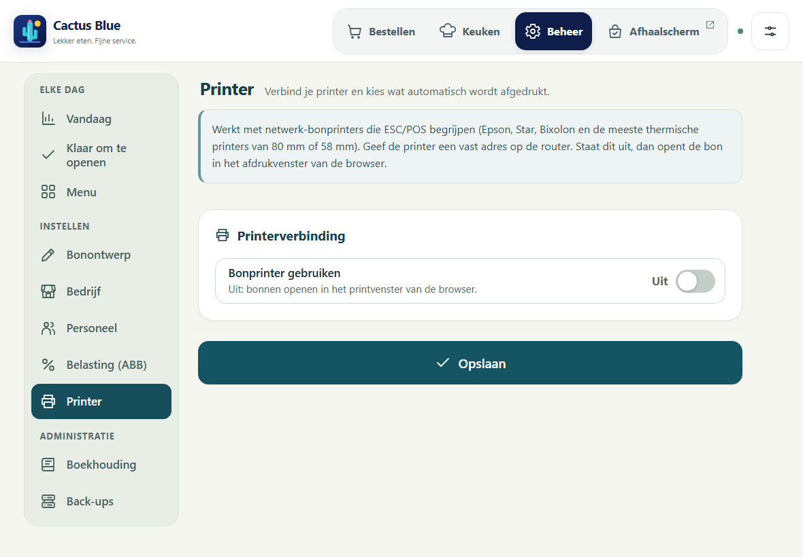
Taal en uiterlijk van de schermen
Tik rechtsboven op de knop met de schuifjes (Schermopties). Daar kiest u Nederlands of English, een licht of donker scherm, de Zonlichtmodus voor buiten, en daar logt u uit. Elk scherm (laptop, tablet, telefoon) onthoudt zijn eigen keuze.
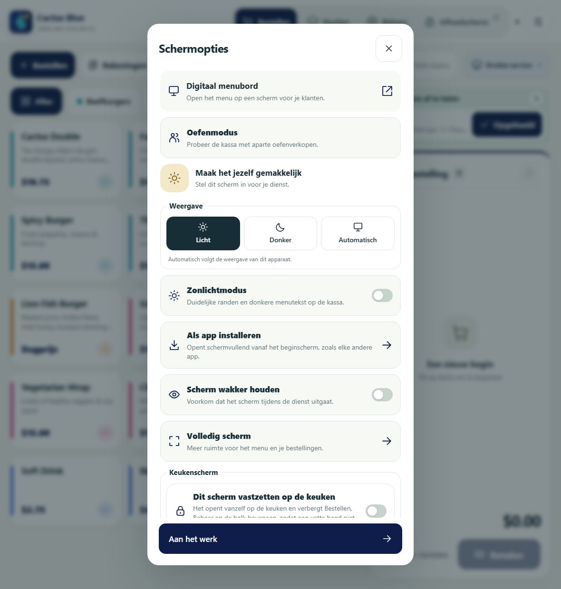
5. Een bestelling opnemen en afrekenen
Start de kassa met het pictogram CactusPOS op het bureaublad en log in met uw pincode. U bent op het scherm Bestellen: links het menu, rechts de bestelling.
Voor het openen, en oefenen met de kassa
De eigenaar kan onder Beheer › Klaar om te openen de server, keukenverbinding, netwerkprinter, recente reservekopie, bedrijfsgegevens/CRIB, belastingcontrole en voorbeeldpincodes controleren. Tik na een wijziging op Opnieuw controleren. Een bereikbare printer heeft nog steeds papier en een echte afdruktest nodig.
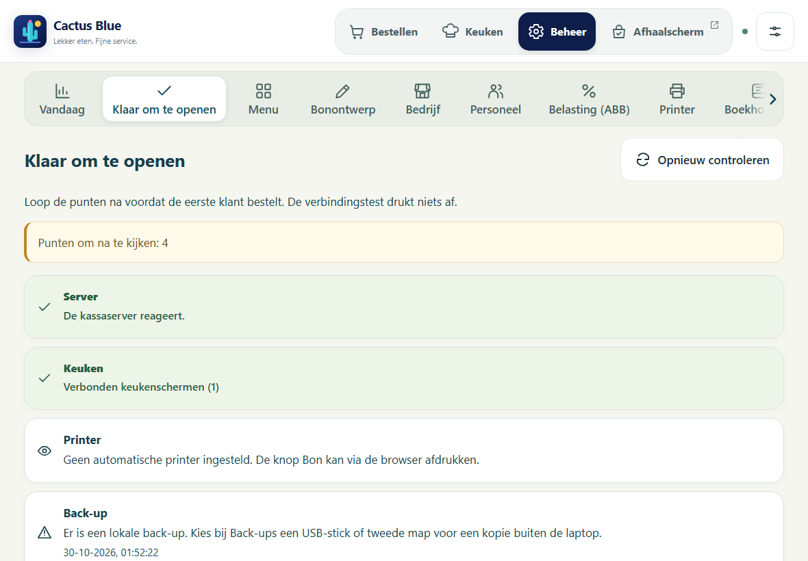
Kies voor proefbestellingen Schermopties › Oefenmodus en bevestig. De gele balk OEFENMODUS moet zichtbaar blijven. Oefenen heeft een aparte database en bonteller; echte printers, kassalade, boekhoudexporten/boekingen en externe reservekopieën staan uit. De eerste start kopieert het huidige menu en de instellingen; latere echte wijzigingen worden niet opnieuw gekopieerd. Open op een ander apparaat /practice/kitchen of /practice/pos. Gebruik Android-app 0.2.0 of nieuwer. Sluit af met Naar de echte kassa en bevestig; controleer voor echte verkopen dat de gele balk weg is.
Als de app tijdens een bestelling sluit
De onvoltooide bestelling wordt op dit apparaat bewaard voor de ingelogde medewerker. Bij heropenen komt deze terug; controleer de huidige prijzen voor u verstuurt. Kies na een onderbroken verzending Bevestiging controleren of Dezelfde verzending herhalen. De oorspronkelijke aanvraag wordt hergebruikt, zodat een verloren antwoord geen tweede bestelling maakt. Controleer de teruggevonden bestelling voordat u verdergaat. Al betaald betekent dat u niets opnieuw in rekening brengt. Is betaling niet bevestigd, controleer dan eerst de losse betaalautomaat. Een waarschuwing over browseropslag betekent dat dit apparaat het concept niet kan bewaren.
- Tik aan wat de gast wil. Tik op een categorie om minder tegelijk te zien, of typ in Zoek in het hele menu.
- Kies de opties als de kassa erom vraagt (extra's, zonder tomaat, welk drankje) en tik op Toevoegen.
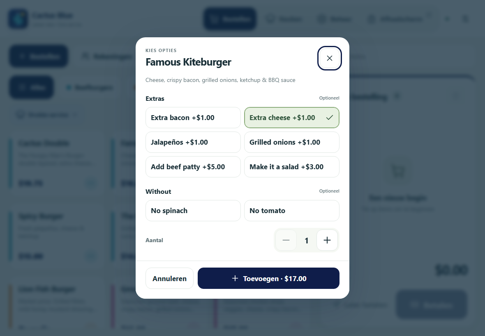
- Controleer de bestelling rechts. Met + en − wijzigt u het aantal; bij 0 verdwijnt de regel. De prullenbak bovenaan maakt de hele bestelling leeg (Herstellen haalt hem terug). Onder Opmerking kunt u iets voor de keuken typen.
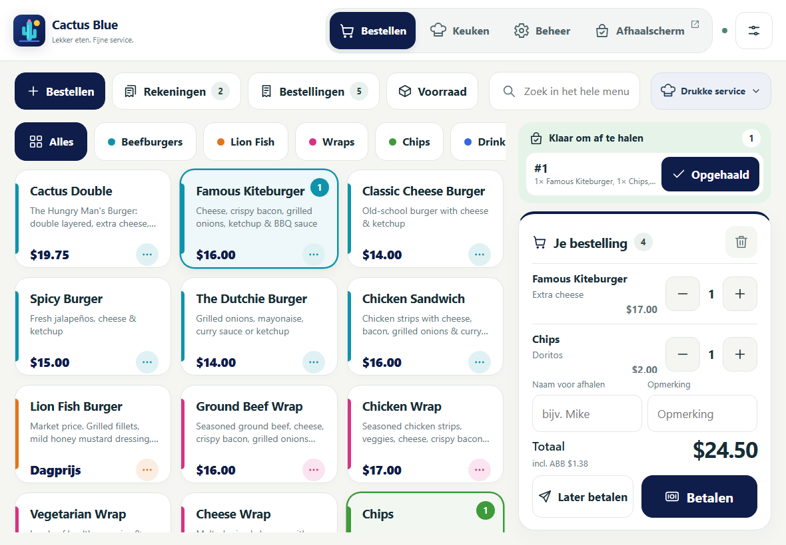
- Tik op Betalen.
Contant betalen
- Contant is al gekozen. Tik aan wat de gast u geeft: Gepast, een van de biljetten ($20, $50), of typ het bedrag op het cijferblok.
- De kassa toont het Wisselgeld.
- Tik op Betaling bevestigen.
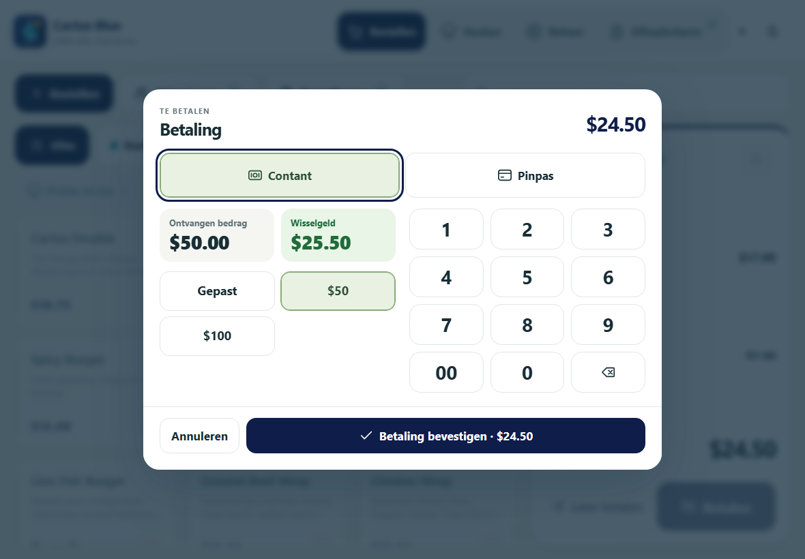
Met de pinpas betalen
- Tik op Pinpas.
- Reken eerst af op uw pinautomaat. De kassa praat niet met de pinautomaat; hij legt alleen vast dat deze verkoop met de pinpas is betaald.
- Heeft de gast op de pinautomaat een fooi gegeven, tik die dan aan. U kunt de referentie van de pinbon intypen.
- Tik op Betaling bevestigen.
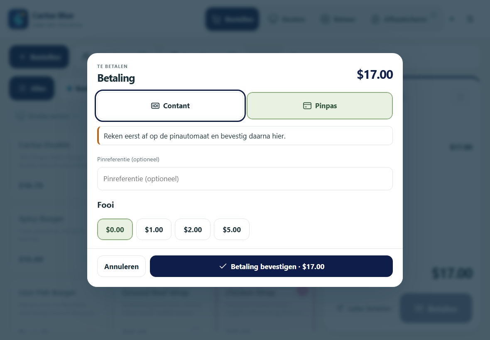
Klaar
De kassa toont Betaald met het bestelnummer. Zeg het nummer tegen de gast. Tik op Bon als de gast een bon wil, en daarna op Volgende bestelling.
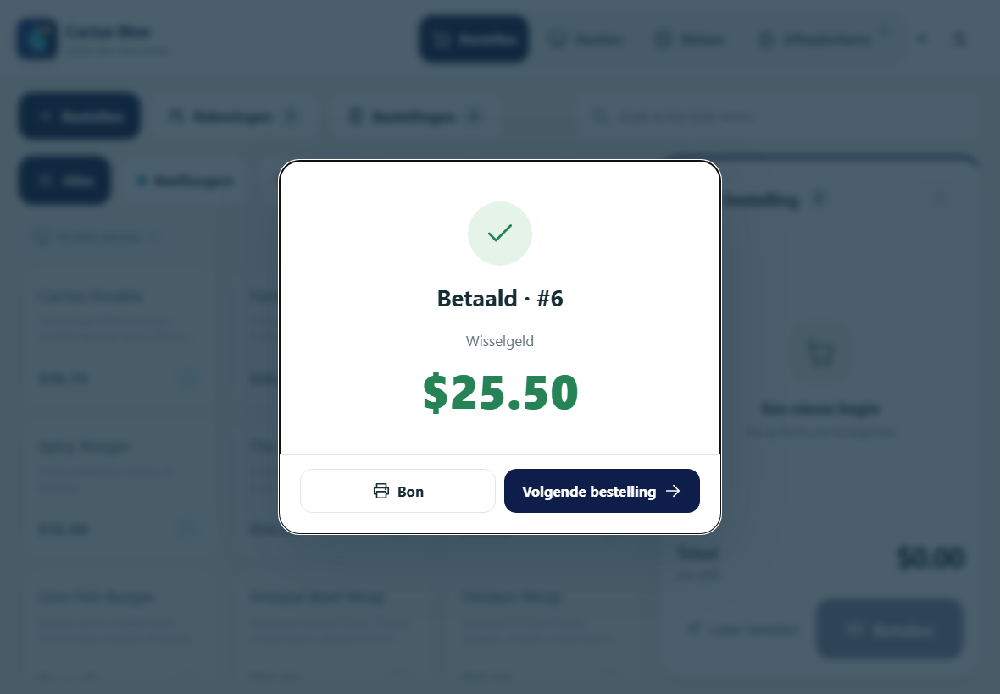
Drukke service of rustige service
Op de knop boven het menu staat Drukke service of Rustige service. Tik erop om te wisselen.
- Drukke service: elke bestelling gaat naar het keukenscherm en het afhaalscherm. Gebruik dit als iemand anders kookt.
- Rustige service: bestellingen slaan beide schermen over. Gebruik dit als u de bestelling opneemt en zelf maakt.
6. Later betalen, rekeningen en fouten herstellen
Later betalen
Eet een gast eerst en betaalt hij daarna, tik dan op Later betalen in plaats van Betalen. De bestelling gaat naar de keuken en blijft open totdat er is betaald.
Typ een naam en de knop wordt Rekening openen voor Mike. Met een naam kan de gast later bijbestellen op dezelfde rekening.
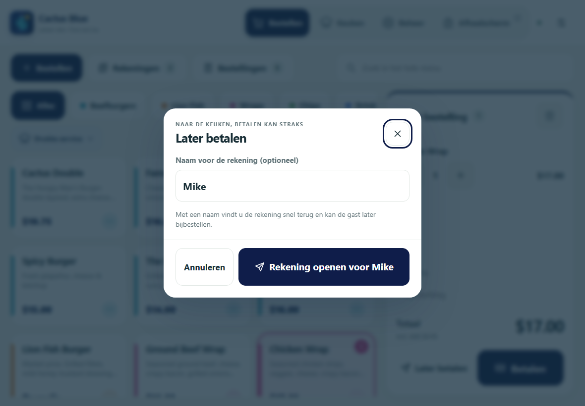
Rekeningen
Tik linksboven op Rekeningen om elke open rekening te zien. Tik er een aan om hem te openen:
- Items toevoegen: de gast bestelt bij. Tik de items aan en daarna Toevoegen aan Mike.
- Rekening afdrukken: een rekening om aan de gast te laten zien vóór het betalen.
- Betalen: de gast betaalt de hele rekening.
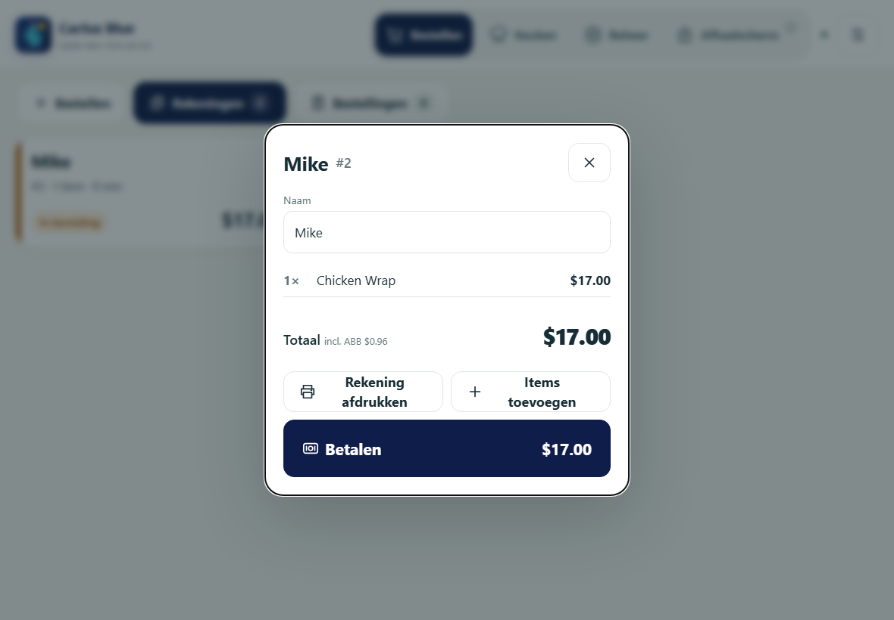
De bestellingen van vandaag
Tik op Bestellingen. Te betalen laat zien wat nog openstaat; Alles vandaag laat alles zien.
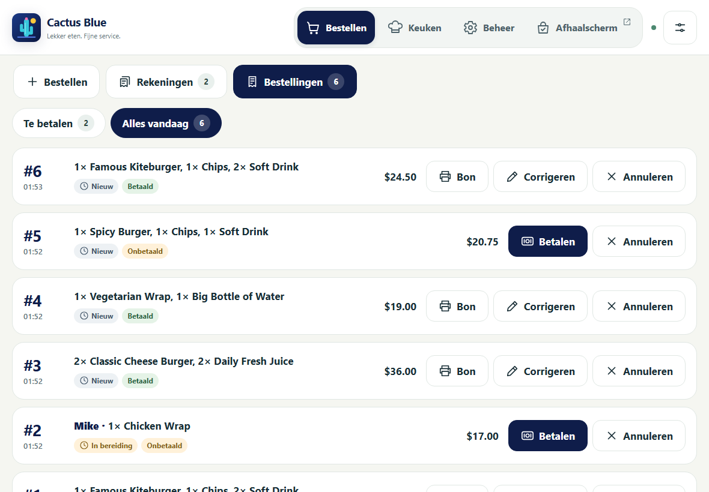
| Knop | Wat hij doet |
|---|---|
| Betalen | Een bestelling afrekenen die nog openstaat. |
| Bon | De bon nog een keer afdrukken. |
| Corrigeren | Een verkoop herstellen die al is betaald: een verkeerd item, een verkeerd aantal, of contant dat pin had moeten zijn. Pas het aan, kies wat er misging en tik op Correctie opslaan. De kassa zegt hoeveel u moet teruggeven of bijvragen. |
| Annuleren | Een bestelling helemaal laten vervallen. Typ de reden. |
Een eigenaar kan altijd corrigeren en annuleren. Wie als Medewerker is ingelogd, heeft de pincode van de eigenaar nodig om een verkoop te corrigeren, en om een bestelling te annuleren die al is betaald of al wordt bereid.
Er wordt nooit iets gewist. Een geannuleerde of gecorrigeerde verkoop blijft in de administratie staan, met die aanduiding, met de reden en met wie het deed. Dat verwacht de Belastingdienst van een kassa.
7. Het keukenscherm en het afhaalscherm
Keuken
Tik bovenaan op Keuken, of open het scherm op een tablet bij de grill (hoofdstuk 8). Nieuwe bestellingen verschijnen vanzelf, met een geluidje.
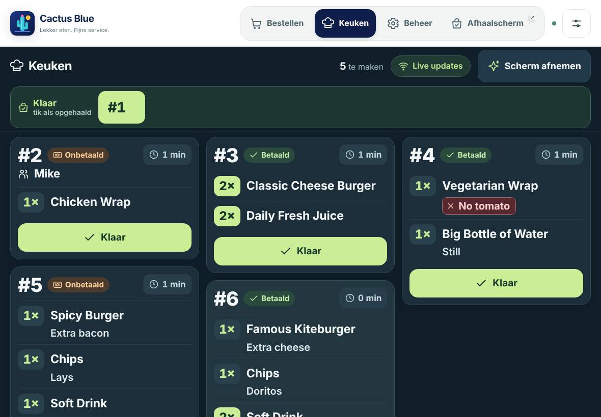
- Een nieuwe bestelling staat in de kolom Nieuw. Tik op Start bereiding als u begint.
- Tik op Markeer klaar als het eten klaar is. Het nummer gaat naar Klaar, ook op het afhaalscherm.
- Tik op Opgehaald als de gast het heeft. De bestelling verdwijnt van het scherm.
Te vroeg getikt? Met Terug gaat een bestelling die klaar was terug naar In bereiding, en Ongedaan maken bovenaan draait uw laatste tik terug. Op elke bon staat hoeveel minuten hij wacht; na 5 en na 10 minuten verandert hij van kleur.
Afhaalscherm
Een scherm voor uw gasten: links de nummers die worden bereid, rechts de nummers die klaar zijn. Tik bovenaan op Afhaalscherm; het opent in een eigen venster. Er is geen pincode voor nodig, dus het kan de hele dag aanstaan op een tablet of tv die gasten kunnen zien.
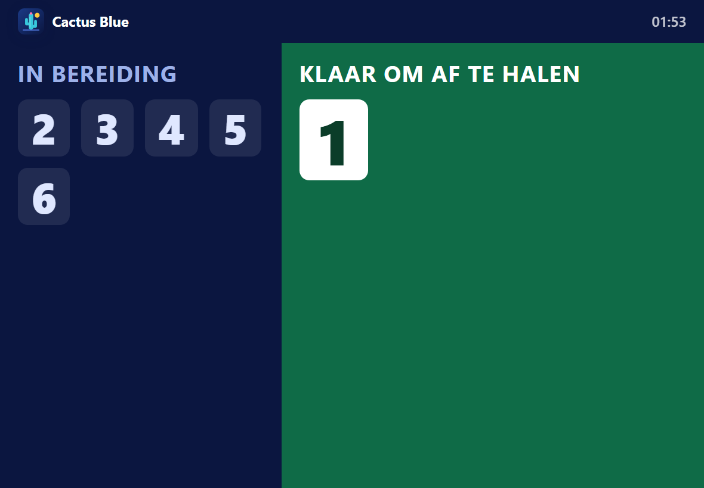
Menubord
Onder Schermopties (de knop met de schuifjes) vindt u Digitaal menubord: uw menu met prijzen, voor een tv of tablet die naar de gasten is gericht. Het volgt het menu in Beheer, dus een nieuwe prijs staat er vanzelf op.
8. Een tablet of telefoon verbinden
De tablet bij de grill toont het keukenscherm. Met een telefoon kunt u bestellingen opnemen aan de tafels. Beide zijn gewoon een webbrowser die een adres op de laptop opent.
- Verbind de tablet met dezelfde wifi als de laptop. Geen gastnetwerk: gastnetwerken houden apparaten uit elkaar.
- Op de laptop: open het menu Start, dan CactusPOS, dan Connect a tablet or phone. Met lokale herkenning gebruikt u
http://cactus.local/kitchen. Het venster toont ook een IP-adres als alternatief, bijvoorbeeldhttp://192.168.1.20:3000/kitchen. - Op de tablet: open de webbrowser (Chrome of Safari) en typ het adres. Werkt de lokale naam niet, gebruik dan het IP-adres. In de Android-app CactusPOS bewaart u het adres en het gekozen scherm onder Connection.
- Log in met uw pincode.
- Houd het bij de hand: kies in het menu van de browser Toevoegen aan startscherm (op een iPad: Zet op beginscherm). De tablet heeft dan een pictogram dat het keukenscherm direct opent.
| Scherm | Het adres eindigt op |
|---|---|
| Keuken | /kitchen |
| Bestellingen opnemen | /pos |
| Afhaalscherm voor gasten (geen pincode) | /pickup |
Goed om te weten
- De laptop moet aan blijven. Gaat hij in de slaapstand, dan raken de andere schermen de kassa kwijt. Open in Windows Instellingen › Systeem › Energie (in Windows 10: Energiebeheer en slaapstand) en stel in dat de laptop nooit in slaapstand gaat zolang hij aan de stroom zit.
- Geen router in de truck? Zet de Mobiele hotspot van de laptop aan (Windows Instellingen › Netwerk en internet › Mobiele hotspot) en verbind de tablet daarmee. Zoek het adres daarna opnieuw op met Connect a tablet or phone.
- Het adres werkt na een paar dagen niet meer. De router heeft de laptop een ander nummer gegeven. Zoek het nieuwe adres op met Connect a tablet or phone. Om dit te voorkomen: vraag degene die de router beheert om de laptop een vast adres te geven.
- Het scherm van de tablet gaat uit. Zet de schermtime-out van de tablet zelf op de langste tijd, of op aan blijven tijdens het opladen.
- Op het keukenscherm staat Live updates in het groen als het verbonden is, en Verbinding herstellen als het de laptop kwijt is. Het maakt vanzelf opnieuw verbinding.
9. De dag afsluiten
Beheer › Vandaag toont de dag tot nu toe: omzet, aantal bestellingen, de ABB daarin, contant en pin, en wat het best verkocht.
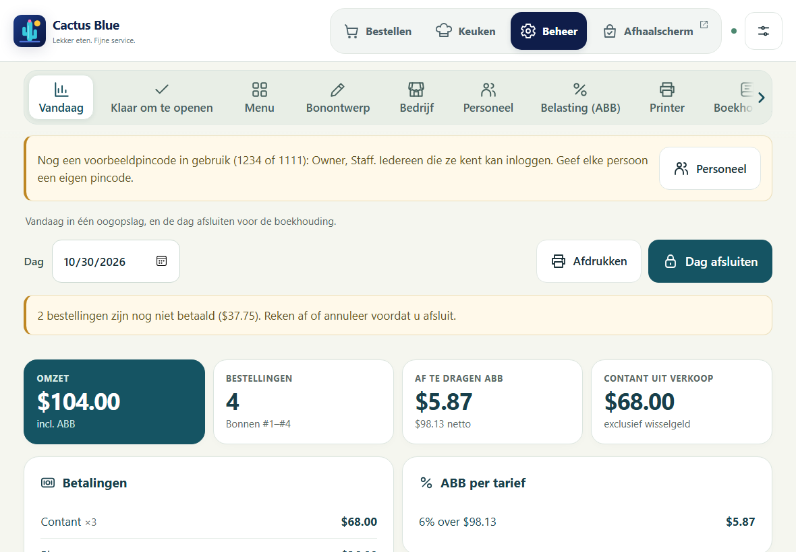
- Rond eerst de open bestellingen af. De pagina waarschuwt als er nog bestellingen niet zijn betaald. Reken ze af, of annuleer ze.
- Controleer verkopen voor het afsluiten. Zoek de verkoop in de bonnenlijst op deze pagina en tik op Corrigeren om artikelen, aantallen of betaalwijze te herstellen. Vul een reden in. De eerste bon blijft bewaard en er komt een gekoppelde vervangende verkoop. Controleer zelf eventuele terugbetaling of bijbetaling op het pinapparaat.
- Controleer Kassalade. Boek elke ochtend het aanwezige geld met Kas in en reden Startgeld. Boek bijstorten en opnames met Kas in / Kas uit, bedrag en reden. Boeking herstellen maakt een gelijke tegenboeking als een boeking fout was. Elke boeking bewaart de medewerker; kasboekingen veranderen de lade, geen omzet of ABB. Lade openen verschijnt alleen bij een ingestelde geschikte printer/kassalade.
- Tik op Dag afsluiten.
- Tel al het geld in de lade, inclusief startgeld, en typ het bedrag. Verwacht geld is contante verkoop plus Kas in min Kas uit. Boek eerst het startgeld. U mag de telling leeg laten als u niet hebt geteld.
- Tik nog een keer op Dag afsluiten. De dag wordt bewaard als een genummerd Z-rapport.
- Met Afdrukken drukt u het dagrapport af, als u het op papier wilt.
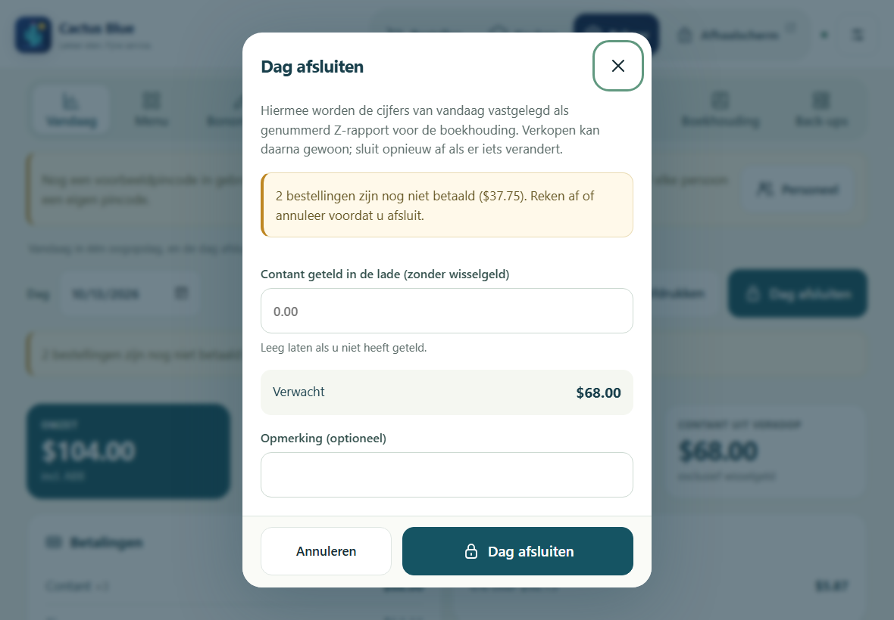
U kunt na het afsluiten gewoon blijven verkopen. Verandert er daarna iets, dan zegt de pagina dat; tik op Opnieuw afsluiten om de nieuwe cijfers te bewaren.
Wijzigen verkopen of kasboekingen tijdens het tellen, dan wordt afsluiten geweigerd en worden de cijfers vernieuwd. Controleer en tel opnieuw. Bij een onderbroken kasboeking kiest u Bevestiging controleren of Dezelfde boeking herhalen; verplaats het geld niet opnieuw. Afgesloten rapporten bewaren hun oorspronkelijke kasboekingen en telwijze.
Voor de boekhouder
Beheer › Boekhouding. Kies de datums en download Dagomzet (CSV): één regel per afgesloten dag met omzet, ABB per tarief, contant, pin en fooien. Elke boekhouder en elk rekenbladprogramma kan dat bestand openen.
10. Back-ups
CactusPOS maakt vanzelf een kopie van al uw verkopen: elke keer dat het start, als u de dag afsluit, en elk half uur zolang er iets nieuws is. U hoeft daar niets voor te doen.
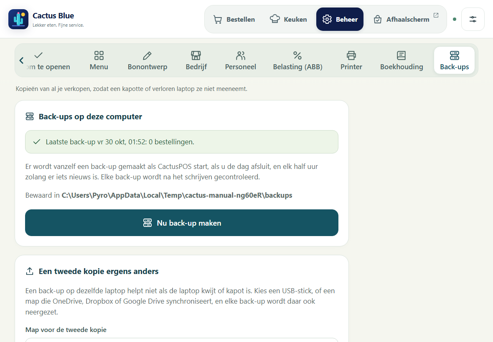
Stel een tweede kopie in: doe dit één keer
Die kopieën staan op dezelfde laptop. Ze helpen niet als de laptop wordt gestolen, valt of kapotgaat. Geef CactusPOS een tweede plek om ze neer te zetten.
- Steek een USB-stick in de laptop en laat die zitten. Of gebruik een map die OneDrive, Google Drive of Dropbox synchroniseert.
- Beheer › Back-ups. Typ onder Een tweede kopie ergens anders de map, bijvoorbeeld
E:\CactusPOS backups. De map moet al bestaan. Tik op Opslaan. - Tik op Nu back-up maken en controleer of er een bestand in die map verschijnt.
Een back-up terugzetten
Dit hebt u nodig als de laptop is vervangen, of als de gegevens beschadigd zijn geraakt.
- Op een nieuwe laptop: installeer eerst CactusPOS (hoofdstuk 3).
- Open het menu Start, dan CactusPOS, dan Restore a backup. Er opent een zwart venster met tekst in het Engels.
- Typ 1 voor de nieuwste back-up op deze computer, of 2 om een bestand op een USB-stick te kiezen. Druk op Enter.
- Het venster toont hoeveel bestellingen er in de back-up zitten en hoeveel er nu op de computer staan, en het waarschuwt als de back-up ouder is. Typ yes en druk op Enter om door te gaan.
De gegevens die worden vervangen, worden niet weggegooid. Ze gaan naar een eigen map, zodat de stap kan worden teruggedraaid.
Probeer het één keer voordat u het nodig hebt. Maak een back-up, zet hem terug en controleer of de bestellingen van vandaag er nog zijn.
11. Bijwerken, verhuizen en verwijderen
Een nieuwe versie
- Sluit het venster van de kassa.
- Dubbelklik op het nieuwe installatiebestand en doorloop dezelfde vensters als de eerste keer.
Uw verkopen, menu, pincodes en instellingen blijven precies zoals ze waren. De andere schermen maken vanzelf opnieuw verbinding; zegt een scherm dat er een update klaarstaat, tik dan op Herladen zodra u klaar bent.
Een nieuwe laptop
Installeer CactusPOS op de nieuwe laptop en zet daarna uw nieuwste back-up terug (hoofdstuk 10). Zoek het nieuwe adres voor de tablets op met Connect a tablet or phone.
CactusPOS verwijderen
Open in Windows Instellingen › Apps › Geïnstalleerde apps (in Windows 10: Apps en onderdelen), zoek CactusPOS en kies Verwijderen. Het programma en de pictogrammen worden verwijderd.
Uw verkoopgegevens blijven bewaard, in de map AppData\Local\CactusPOS van uw Windows-account. Gooi die map alleen zelf weg als u zeker weet dat u ze niet meer nodig hebt. Een bedrijf moet zijn administratie jarenlang bewaren.
12. Als er iets misgaat
| Wat u ziet | Wat u doet |
|---|---|
| Windows waarschuwt voor het installatiebestand | Zie hoofdstuk 3, stap 2: Meer informatie en dan Toch uitvoeren. |
| Het installatieprogramma zegt dat deze versie van Windows niet wordt ondersteund | CactusPOS heeft Windows 10 (versie 1809 of nieuwer) of Windows 11 nodig, 64-bits. Voer Windows Update uit, of gebruik een nieuwere laptop. |
| Ik heb het venster van de kassa gesloten | Dubbelklik op het pictogram CactusPOS op het bureaublad. Er is niets kwijt: de kassa draait op de achtergrond door, dus de keuken blijft werken. |
| In het venster staat CactusPOS did not start | Probeer het pictogram nog een keer. Start daarna de laptop opnieuw op. Start de kassa dan nog steeds niet, vraag het dan aan degene die u met CactusPOS helpt. |
| Een melding dat port 3000 door een ander programma wordt gebruikt | Een ander programma op de laptop gebruikt dezelfde deur als de kassa. Start de laptop opnieuw op. Komt de melding terug, vraag het dan aan degene die u met CactusPOS helpt. |
| Foute pincode, of Te veel pogingen | Wacht 30 seconden en probeer het opnieuw. Een eigenaar kan iedereen een nieuwe pincode geven onder Beheer › Personeel. |
| De schermen staan in de verkeerde taal | De knop met de schuifjes rechtsboven (Schermopties) › Taal. Op het inlogscherm: de knop NL of EN. |
| De tablet kan het adres niet openen | Dezelfde wifi als de laptop, en geen gastnetwerk? Staat de laptop aan, is hij wakker en draait de kassa? Precies overgetypt, met http:// ervoor? Start dan het installatiebestand opnieuw en antwoord Ja op de vraag van Windows. |
| Het adres werkte gisteren wel en vandaag niet | De laptop heeft een ander adres gekregen. Zoek het opnieuw op: menu Start › CactusPOS › Connect a tablet or phone. |
| Op het keukenscherm staat Verbinding herstellen | Het was de laptop even kwijt en probeert het vanzelf opnieuw. Blijft het zo: staat de laptop in de slaapstand, of ligt de wifi eruit? |
| Windows toont een Windows-beveiligingsmelding over Node.js | Node.js is de motor in CactusPOS. Vink beide vakjes aan en kies Toegang toestaan. |
| Er komt geen bon uit | Beheer › Printer. Staat de printer aan, zit er papier in en klopt het adres? Tik op Opslaan en testpagina afdrukken. Tik onder Recente afdruktaken op Mislukte taken opnieuw proberen. |
| Het item dat ik nodig heb, kan ik niet aantikken | Het staat uit als uitverkocht. Beheer › Menu, zet Beschikbaar aan. |
| Er zijn twee kassavensters | Sluit er een. Ze tonen allebei dezelfde kassa. |
Als u om hulp vraagt, vertel dan wat u aan het doen was en wat er op het scherm stond, woord voor woord, of stuur een foto van het scherm. Dat scheelt veel gissen.
Eén pagina voor bij de kassa
's Morgens
- Zet de laptop aan en meld u aan bij Windows. De kassa opent vanzelf. (Zo niet: het pictogram CactusPOS op het bureaublad.)
- Log in met uw pincode.
- Zet de keukentablet aan. Er hoort Live updates in het groen te staan.
- Is er vandaag iets uitverkocht? Beheer › Menu, zet Beschikbaar uit.
Elke bestelling
- Tik de items aan. Kies de opties. Toevoegen.
- Betalen.
- Contant: tik aan wat u hebt gekregen en geef het getoonde wisselgeld. Pin: eerst de pinautomaat, dan tikt u op Pinpas.
- Betaling bevestigen. Zeg het bestelnummer tegen de gast.
- Volgende bestelling.
In de keuken
Start bereiding › Markeer klaar › Opgehaald
Een fout
Bestellingen › Alles vandaag › Corrigeren (verkeerd item of verkeerde betaalwijze) of Annuleren (alles laten vervallen).
Aan het eind van de dag
- Beheer › Vandaag. Staat er niets meer open?
- Dag afsluiten. Tel het contante geld, typ het in, en nog een keer Dag afsluiten.
- Sluit de laptop op de gewone manier af.
Voor de tablet
Menu Start › CactusPOS › Connect a tablet or phone toont het adres dat u moet typen.